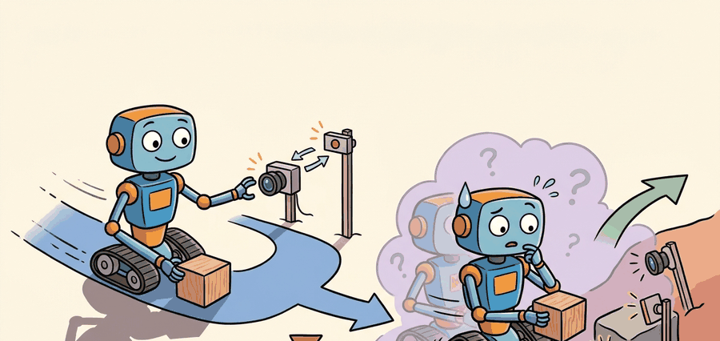

"A transfer result that omits the simulation baseline, the hardware result, and the failure conditions has not reported a transfer; it has reported a deployment and called it a success."
Section 20.5

This section assumes familiarity with the reality gap taxonomy from section 20.1 and with domain randomization from section 20.3, because the transfer ratio and gap diagnostics introduced here measure the gap that those earlier sections define and attempt to close. If you already understand how to compute a matched success rate across simulator and hardware, you can skip to section 20.4 for fine-tuning on hardware. The evaluation protocol developed here recurs in section 45.3 alongside large-scale locomotion benchmarks, where transfer tags and held-out terrain panels extend the same artifact schema to parallel training stacks.
A manipulation policy posts 94% success in simulation. The paper ships. Six months later a robotics team deploys the same policy on real hardware and watches it fail two-thirds of the time, yet the original authors never lied: they just never measured the gap. As embodied AI moves from benchmark papers to physical deployment, the field urgently needs a shared language for transfer performance, one that records simulator score, hardware score, safety interventions, dominant failure modes, and whether all those numbers came from the same task panel and protocol. You will build that evaluation contract here and learn why a single success rate, without context, tells you almost nothing about whether a policy will survive contact with the real world.
For Measuring transfer performance, sim-to-real transfer should name the randomized variables, simulator assumptions, real-world measurement, and demonstration-learning handoff in one transfer ledger.
This section develops a transfer evaluation contract. The contract includes task success, return, completion time, safety violations, intervention count, blocked-action count, reset count, hardware health, and failure category. Reporting only success hides how the success was purchased.
The key question is practical: do the metrics compare the same construct under the same protocol, or are we comparing a clean simulator score with a noisy hardware anecdote?
A transfer metric earns trust when every compared number is co-computed from one evaluation artifact. Separate scripts, separate task panels, or separate success definitions can produce a table that looks precise while comparing different constructs.
Theory
A basic transfer ratio is $\rho = S_{\text{real}} / S_{\text{sim}}$, where $S$ is the same success metric measured on matched task instances. If a policy succeeds in 90 percent of simulated trials and 63 percent of hardware trials, $\rho = 0.70$. The ratio is useful only when both rates use the same task family and success rule.
Good reports also include gap diagnostics: success gap $S_{\text{sim}} - S_{\text{real}}$, intervention rate, safety-violation rate, blocked-action rate, and failure-category distribution. These metrics tell the reader whether the policy failed because it could not solve the task, because it needed supervision, or because safety gates stopped unsafe commands.
Consider a specific case: a locomotion policy trained in Isaac Lab achieves 94 percent success on flat-terrain tasks in simulation. On the physical ANYmal quadruped the same policy achieves 71 percent, giving $\rho = 0.75$. Failure labeling reveals that 12 percentage points of that gap come from actuator delay (the real motors lag the simulator by roughly 8 ms per joint), 6 points from contact slip on the rubber floor surface (the simulator used a friction coefficient of 0.8 while the lab floor measured 0.55), and 5 points from Inertial Measurement Unit (IMU) drift accumulating over long episodes. Without failure labels, the 71 percent hardware number looks like a single undifferentiated shortfall. With them, the builder knows to add delay randomization and re-identify floor friction before the next hardware run.
The mechanism is paired evaluation. Select the task panel, freeze the policy checkpoint, run the simulator evaluation, run the hardware evaluation under the documented gate, assign failure labels, and compute every metric from the same artifact table.
Algorithm: Paired Transfer Evaluation Protocol
Input: policy parameters $\theta$, task panel $\mathcal{T} = \{t_1, \ldots, t_N\}$, success function $\sigma$, safety gate $g$, simulator $\text{Sim}$, hardware robot $\text{Real}$
Output: transfer report with $\rho$, gap diagnostics, intervention rate, and failure distribution
- Freeze checkpoint $\theta^*$ and evaluation code; record commit hash and simulator version so the run is reproducible.
- For each task instance $t_i \in \mathcal{T}$, run $\pi_{\theta^*}$ in $\text{Sim}$ and record success $s_i^{\text{sim}} = \sigma(\tau_i^{\text{sim}})$, return $G_i^{\text{sim}}$, and completion time $T_i^{\text{sim}}$.
- Run $\pi_{\theta^*}$ on the physical robot for the same $t_i$; log safety events $e_i$, interventions $v_i$, and blocked actions $b_i$ via the hardware gate $g$.
- Record hardware success $s_i^{\text{real}} = \sigma(\tau_i^{\text{real}})$ and assign a failure label $f_i \in \{\text{slip, delay, perception, drift, gate, timeout}\}$ for each $s_i^{\text{real}} = 0$.
- Write all fields $(t_i, s_i^{\text{sim}}, s_i^{\text{real}}, G_i, T_i, e_i, v_i, b_i, f_i)$ into one artifact table; never split simulator and hardware rows across separate files.
- Compute aggregate rates: $S_{\text{sim}} = \frac{1}{N}\sum_i s_i^{\text{sim}}$, $S_{\text{real}} = \frac{1}{N}\sum_i s_i^{\text{real}}$, transfer ratio $\rho = S_{\text{real}} / S_{\text{sim}}$, and intervention rate $\bar{v} = \frac{1}{N}\sum_i v_i$.
- Decompose the success gap $\Delta = S_{\text{sim}} - S_{\text{real}}$ by failure label to obtain per-category contributions $\Delta_{f}$ for each $f$.
- Estimate uncertainty: compute 95 percent bootstrap confidence intervals for $\rho$ and $\Delta$ by resampling the $N$ paired rows with replacement.
- Attach trace pointers (Robot Operating System 2 (ROS 2) bag paths or LeRobot episode IDs) to each row so failures can be replayed and relabeled without re-running hardware.
- Publish the artifact with raw trials, summary statistics, uncertainty bounds, failure distribution $\{\Delta_f\}$, and trace pointers; report $\rho$ and $\bar{v}$ together, never separately.
Worked Example
Code Fragment 20.5.1 computes a small transfer report from matched simulated and real trials. Notice that success, interventions, and failure labels are computed from the same rows.
# Compute transfer metrics from one matched evaluation artifact.
# Success and safety numbers stay tied to the same task panel.
sim_success = [1, 1, 1, 1, 0]
real_success = [1, 0, 1, 1, 0]
interventions = [0, 1, 0, 0, 1]
sim_rate = sum(sim_success) / len(sim_success)
real_rate = sum(real_success) / len(real_success)
transfer_ratio = real_rate / sim_rate
intervention_rate = sum(interventions) / len(interventions)
print(f"sim_success={sim_rate:.2f}")
print(f"real_success={real_rate:.2f}")
print(f"transfer_ratio={transfer_ratio:.2f}")
print(f"intervention_rate={intervention_rate:.2f}")sim_rate, real_rate, transfer_ratio, and intervention_rate from one matched artifact. The intervention rate changes the interpretation of the transfer ratio, because 0.75 transfer with frequent supervision is not the same result as 0.75 autonomous transfer.Expected output: a transfer report should include the simulator rate, hardware rate, transfer ratio, and safety denominator. If the policy required interventions, that fact belongs next to the success rate, not in a separate paragraph.
The intervention rate matters in embodied AI because a physical robot that completes tasks only under human supervision cannot operate autonomously in the field. A policy with 0.75 transfer ratio but 0.40 intervention rate has not transferred: it has been guided. Put that number in concrete terms: across 100 hardware episodes, 40 required a human to take control, meaning an operator had to be present and attentive for every single run, which is the opposite of autonomous deployment. On real hardware, every intervention carries cost: an operator must be present, the task timeline breaks, and safety depends on human reaction time rather than the policy. High intervention rates also indicate that the sim-to-real gap is large enough to produce unsafe or unrecoverable states, which is a mechanical failure signal, not a performance nuance.
To compute the intervention rate, count how many hardware episodes required an operator to take control, then divide by the total episode count. Log each intervention the moment the operator activates the override controller, not in post-processing. This rate measures how often the policy produced states a human judged dangerous or unrecoverable. Success rate alone cannot capture that safety-weighted signal.
When using LeRobot to store hardware episodes, set the intervention field in every episode's metadata at collection time, not in post-processing. Retroactively labeling interventions from video review introduces disagreement between annotators and inflates apparent autonomy. A row written without an intervention flag at the moment the operator took control is unrecoverable, so instrument your ROS 2 teleoperation node to write a boolean human_override stamp directly into the bag before the episode closes.
In practical systems, use evaluation harnesses that emit a single table per protocol: configuration, policy checkpoint, task instance, simulator metrics, hardware metrics, safety events, and failure label. Gymnasium wrappers, Isaac Lab task panels, ROS 2 logs, and LeRobot datasets are useful only if they preserve the common artifact schema.
Practical Recipe
- Freeze the policy checkpoint and evaluation code before running the comparison.
- Define the task panel, success rule, timeout, safety gates, and intervention policy in writing.
- Compute simulator and hardware metrics from one artifact schema.
- Report uncertainty with trial counts, paired panels, and confidence intervals or bootstrap intervals when sample size permits.
- Include failure labels, videos or state traces, and all safety denominators in the same result package.
The common mistake is to compare the best simulator run with a separate hardware run collected under a different protocol. That table may pass a number-by-number audit while failing the scientific comparison.
A common assumption is that a high task success rate on real hardware is sufficient evidence that sim-to-real transfer succeeded. This is wrong in embodied AI because success rate alone does not reveal how that success was purchased: a policy that completes 80% of hardware trials while requiring human intervention in 60% of episodes has not transferred autonomy, it has transferred a policy that requires a human safety net to function. The correct mental model treats transfer performance as a joint claim over success rate, intervention rate, and failure label distribution, reported together from the same evaluation artifact, so that the reader can judge whether the policy operates autonomously or only under supervision.
A manipulation benchmark should report matched success on the same object poses, number of human interventions, blocked actions, hardware resets, median completion time, and failure labels such as slip, missed grasp, collision gate, delay, or perception miss. Those fields tell a builder what to fix next.
A transfer score without a gap decomposition is a number without an address. Knowing the policy achieved 70 percent on hardware tells you very little. Knowing it lost 20 points to friction mismatch, 6 to actuator delay, and 4 to perception noise tells you exactly where to spend the next week.
Active directions (2024-2026):
1. Standardized sim-to-real benchmarks with locked evaluation protocols. The field is moving from lab-specific transfer numbers toward community benchmarks that freeze the task panel, perturbation suite, and success definition. The HOVER benchmark (Ma et al., 2024, NVIDIA and UT Austin) defines a suite of humanoid locomotion tasks with documented actuator-delay and friction ranges so that transfer ratios from different groups are construct-matched. A parallel effort for manipulation is RoboVerse (Wen et al., 2025, multiple institutions), which provides a unified simulation-to-real evaluation harness spanning heterogeneous robot morphologies and contact-rich tasks.
2. Online gap estimation during deployment. Rather than diagnosing failure only after hardware rollouts, 2024-2025 work is embedding real-time domain-shift detectors that flag when the observed trajectory distribution diverges from the training distribution, triggering targeted adaptation or safe handoff. TieBot (Liu et al., 2024, Tsinghua) and similar systems attach a lightweight uncertainty estimator to the policy head and use its signal to gate operator interventions, turning intervention rate from a post-hoc label into an online control variable.
3. Cross-embodiment transfer ratios. As foundation models for robotics (e.g., pi0, Physical Intelligence, 2024; OpenVLA, Kim et al., 2024) are fine-tuned across multiple robot morphologies, the transfer ratio must extend to measure how well a shared policy checkpoint transfers from one hardware platform to another without re-training. Current metrics conflate sim-to-real gap with cross-embodiment gap, making it impossible to attribute failure to the simulator or to morphology mismatch.
Open problem for PhD students: No community standard exists for assigning failure labels automatically from trajectory data. Current practice requires a human to watch each failed episode and assign a label such as "actuator delay" or "contact slip." A tractable dissertation contribution is a learned failure-label classifier trained on paired simulator and hardware traces, where the classifier must generalize to new robots and new task families without retraining. The bottleneck is the lack of a public dataset of labeled failure episodes; building and releasing that dataset would itself be a significant contribution.
Given a sim-to-real result, can you identify the task panel, policy checkpoint, success rule, trial count, intervention rate, blocked-action rate, and failure taxonomy? If not, the transfer claim is underspecified.
The idea in this section becomes useful when the result table is built from a single evaluation artifact. The artifact names the checkpoint, simulator version, robot configuration, task panel, safety gate, success rule, raw trials, and failure labels. Without that artifact, a transfer table can be impossible to reproduce or interpret.
The graduate-level habit is to separate three claims. The performance claim says the policy solved the task. The transfer claim says the same construct was evaluated in sim and real. The robustness claim says the result survives held-out dynamics, actuator delay, sensor noise, and initial-condition shifts.
Before looking at the tool choices below, ask yourself: if you had to explain to a colleague why your policy scored 0.75 in transfer but 0.90 in simulation, could you name the specific category of failure that accounts for each percentage point of the gap?
| Tool or Library | Role in the Topic | Builder Advice |
|---|---|---|
| Gymnasium | Metric wrapper consistency | Use it to keep reward, termination, timeout, and info dictionaries stable across evaluation scripts. |
| Isaac Lab | Task panels and perturbations | Use it to evaluate held-out dynamics, actuator delay, terrain, and sensor perturbations before hardware trials. |
| ROS 2 bags | Hardware evidence artifact | Use them to preserve synchronized observations, commands, controller states, safety events, and timestamps. |
| LeRobot | Dataset packaging | Use it to store real-robot episodes with metadata, failure labels, and policy identifiers. |
| Statistical notebooks | Uncertainty and diagnostics | Use a single notebook to compute all compared metrics from the same artifact table. |
A robust implementation starts with the result schema, not with a plotting script. The schema should force every row to contain the policy identifier, task instance, simulator or robot source, success label, safety events, failure label, and trace pointer.
- Define a row schema before collecting trials.
- Run simulator and hardware evaluation through adapters that emit the same schema.
- Compute all metrics, including safety denominators, from that one table.
- Attach trace pointers so failures can be replayed and relabeled.
- Publish aggregate metrics only with trial counts, uncertainty, and the failure-label distribution.
When a transfer result disappoints, do not stop at the aggregate gap. Split failures by perception miss, state-estimation drift, contact slip, actuator delay, controller saturation, safety gate, timeout, and evaluator disagreement. The failure distribution is often more useful than the mean score.
Think of gap decomposition the way a chef diagnoses a dish that came out wrong. Saying "the dish failed" tells you nothing useful. Saying "it was under-salted, the sauce broke because the heat was too high, and the vegetables were overcooked by three minutes" gives you three separate fixes for three separate causes. The transfer gap works the same way: a single number like "23 points lost on real hardware" is as uninformative as "the dish was bad." Splitting that gap into 12 points from actuator delay, 6 from friction mismatch, and 5 from sensor drift gives you a repair list where each item has a known remedy.
Each gap source has a different diagnostic signature and a different remedy. Actuator delay failures tend to cluster at high-velocity transitions and produce overshoot or oscillation visible in joint-torque traces. Contact and friction errors appear most often during initial contact phases and produce slips or tumbles that concentrate in specific task stages. Perception misses distribute more uniformly across episodes and correlate with lighting or background variation in the hardware logs. State-estimation drift compounds over episode length, so its contribution grows as the timeout increases. Knowing which category dominates tells the builder whether to adjust the simulator physics, add delay randomization, extend the sensor perturbation range, or shorten the evaluation horizon. Reporting only the aggregate gap conceals this structure entirely.
For transfer measurement, compare only construct-matched metrics that are co-computed in one pass on one configuration: same task panel, same policy checkpoint, same seed set where applicable, same perturbation suite, same safety gate, and the same success definition. Save the result as one artifact with raw trials, traces, summary statistics, videos or state logs, uncertainty, and failure labels so every number in a later table is backed by the same run.
A transfer score is credible only when success, safety, interventions, perturbations, and failure labels are measured together under the same protocol.
Design a result schema for a real-robot transfer evaluation. Include fields for policy checkpoint, task instance, simulator success, hardware success, intervention count, blocked actions, safety violations, trace pointer, and failure label.
Project Ideas
Beginner (weekend): Build a paired transfer evaluation harness in Python using Gymnasium: train a CartPole or Pendulum policy with a standard RL library, then inject artificial noise (motor delay of 20 ms, observation jitter) into a second Gymnasium environment to simulate the "real world," run both environments with the same policy checkpoint, and produce a transfer report table with sim success rate, noisy-env success rate, transfer ratio, and a breakdown of failure episodes by timeout versus instability. The key challenge is keeping both evaluation loops tied to the same task panel and artifact schema so the transfer ratio is a genuine construct-matched comparison rather than two separate experiments.
Intermediate (1 to 2 weeks): Implement the full paired transfer evaluation protocol from this section for a manipulation task: train a pick-and-place policy in MuJoCo or PyBullet using a Gymnasium wrapper, evaluate it in Isaac Lab with domain-randomized friction and actuator delay, collect matched hardware or high-fidelity sim rollouts via ROS2 bags or LeRobot episode storage, then automatically assign failure labels (slip, delay, timeout, perception miss) and compute per-category gap contributions alongside bootstrap confidence intervals for the transfer ratio. The key challenge is writing simulator and hardware adapter code that both emit the same row schema, because mismatched schemas make the gap decomposition meaningless even when the aggregate numbers look clean.
What's Next?
This section turned measuring transfer performance into a testable embodied-learning contract: define the loop, choose the tool, save one comparable artifact, and diagnose failure by interface. Next, continue with Chapter 20, where the same evaluation habit carries into the next reinforcement-learning decision.
Demonstrates that training with randomized visual and physical parameters forces policies to learn features invariant to simulator appearance, enabling direct transfer to a physical robot without fine-tuning. Read to understand the gap between visual sim-to-real and dynamics sim-to-real; this paper focuses on the visual side.
This paper shows dynamics randomization for transferring learned control policies.
Kumar, A. et al. (2021). RMA: Rapid Motor Adaptation for Legged Robots. RSS.
Introduces RMA, which separates a base policy trained with full privileged state from a lightweight adaptation module trained online from proprioception only. Read Section 3 for the two-phase training procedure; RMA is one of the clearest demonstrations that explicit adaptation at inference time outperforms domain randomization alone for legged locomotion.
Tan, J. et al. (2018). Sim-to-Real: Learning Agile Locomotion for Quadruped Robots. RSS.
This work is a clear example of transferring locomotion policies from simulation to hardware.
NVIDIA Isaac Lab documentation.
NVIDIA's GPU-accelerated robot learning framework that runs thousands of parallel environments on a single GPU. Read the documentation for task configuration, domain randomization APIs, and the sim-to-real export path; massively parallel training with Isaac Lab is how locomotion and dexterous manipulation policies achieve the sample counts needed for sim-to-real transfer.
Drake is relevant when transfer work needs explicit dynamics, constraints, and system identification.